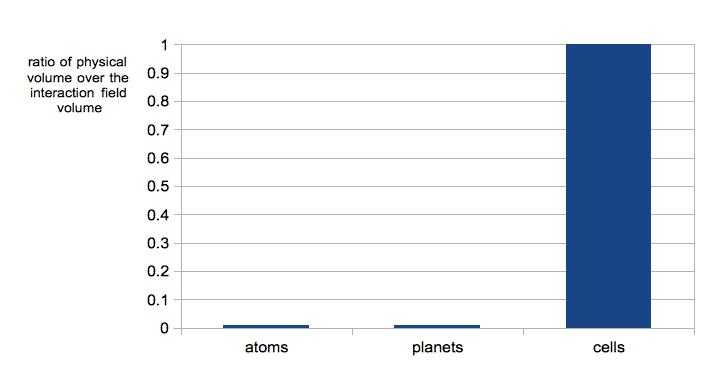
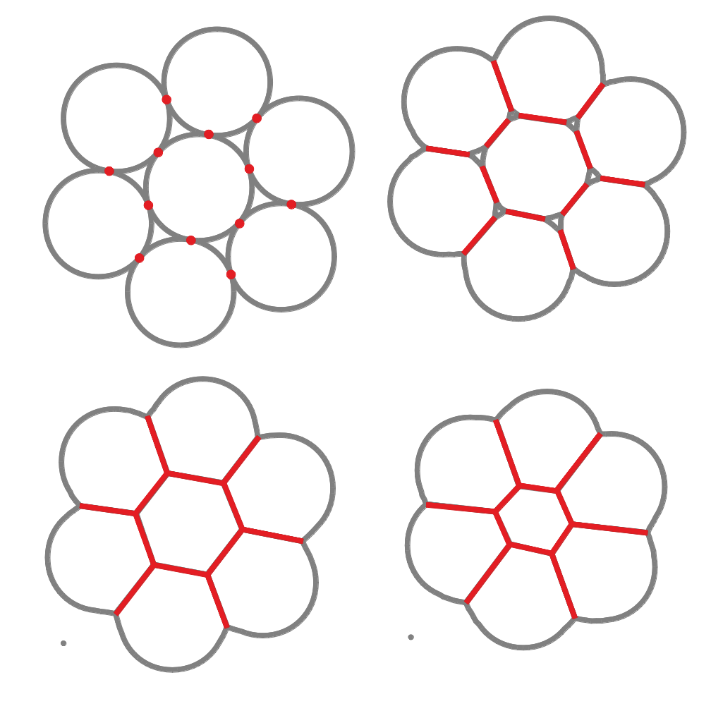
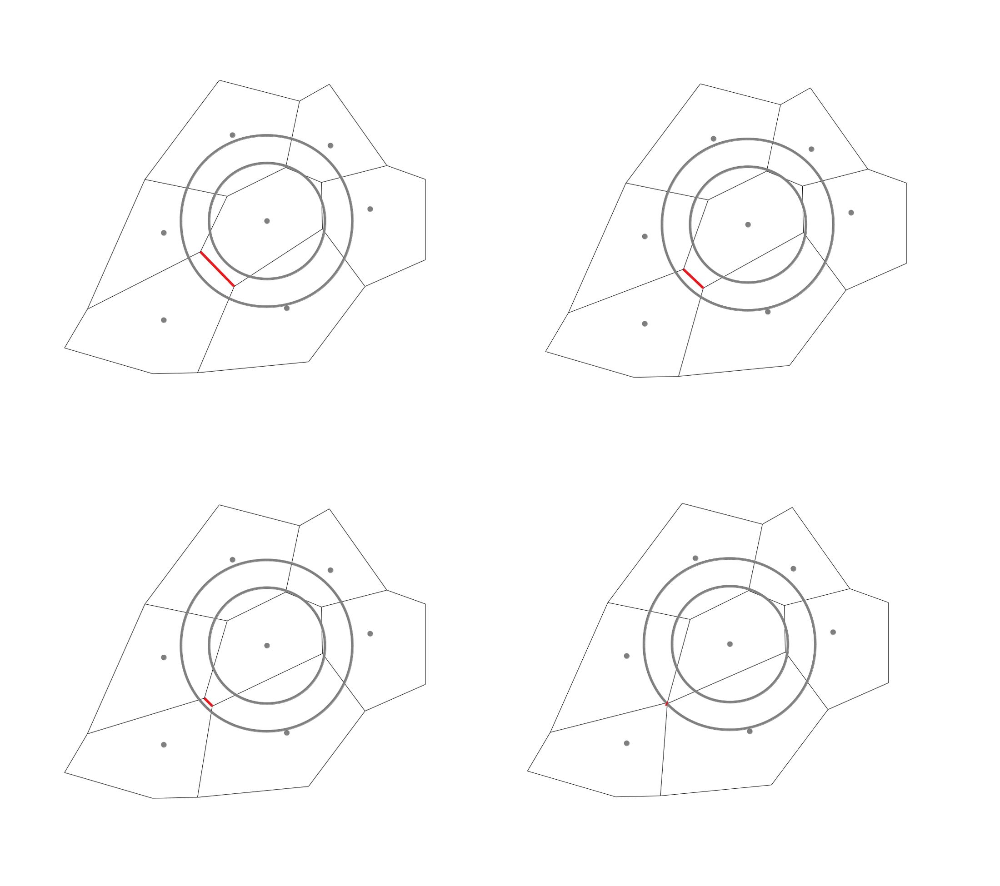
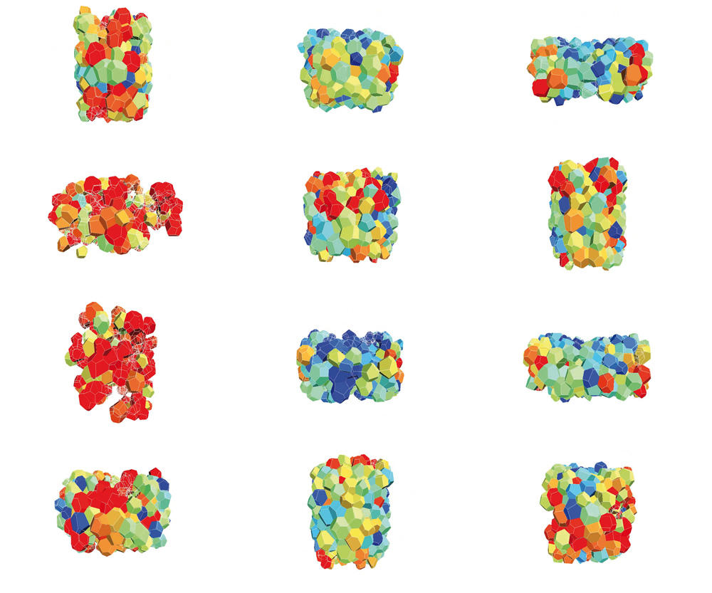
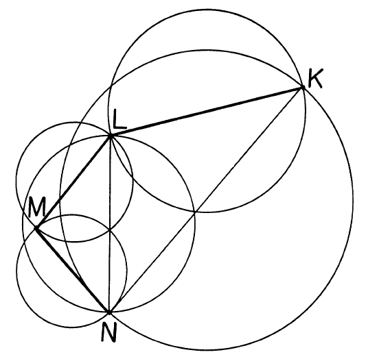
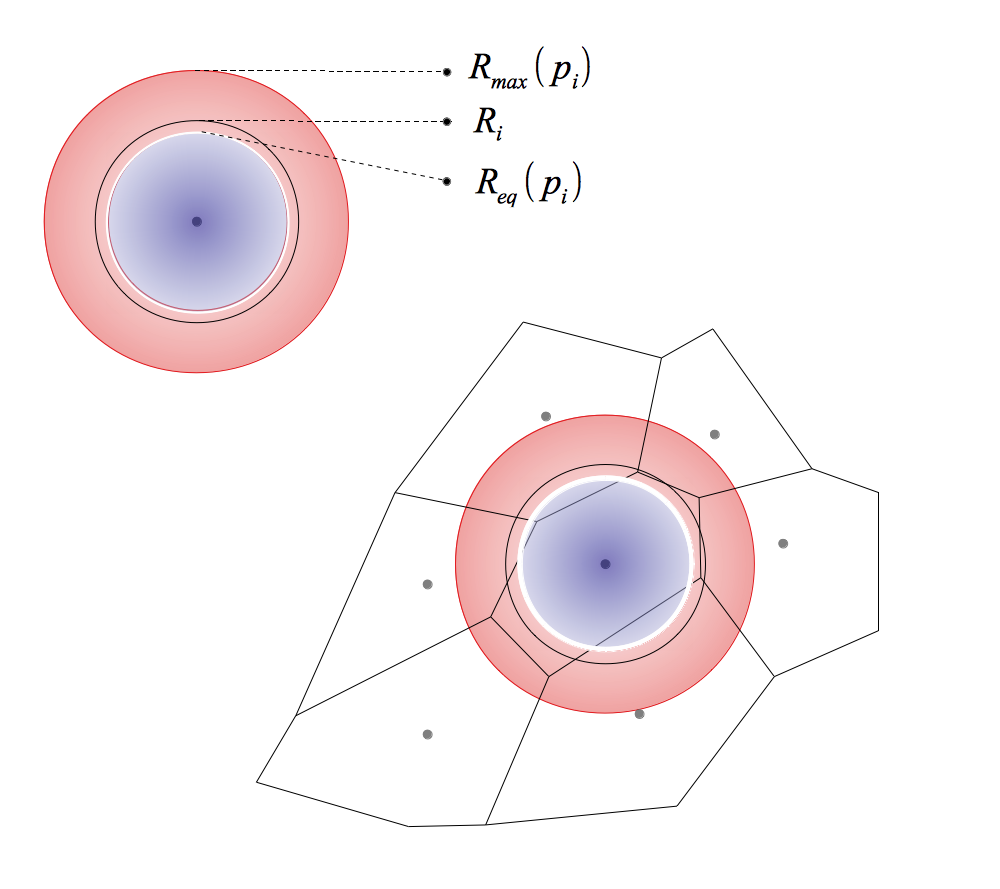

In this first chapter of three that are dedicated to the model, we explain the choices that we made about representing and calculating the mechanical interactions and behavioral properties of the cells. Chemical signalling and internal gene expression will be the topic of Chapter 4 (albeit in less detail), while the overall plan of building a complete morphogenetic platform integrating mechanics and genetics will be exposed in Chapter 5. Altogether, our agent-based modeling and simulation endeavors set the stage for an "in silico" embryo, i.e. a virtual test object that can be manipulated and experimented upon (like putty or clay) in ways impossible with a real embryo. The goal is of course to better understand embryogenesis, and how the particular zebrafish study represents only one specific parametric instance among a much broader class of generic phenomema. Naturally, this virtual embryo, although deprived of "life", still behaves very much like a living entity, animated by the processing units and execution threads of the computers that calculate it. It is a form of "active matter" composed of a great number of self-propelled particles (cells), which carry instructions (rules and local data) diverse enough to equip them with a rich repertoire of potential "decisions" and actions that are function of what they sense from their surroundings. Note that the global environment here will be reduced to a simplified physical world, where gravity doesn't play any role, so that the only forces maintaining the cohesion of the emrbyo will be found among the cells.
3.1. State of the Art in Biomechanical Modeling
Before describing the cell mechanical model that we have designed (in Section 3.2), we present here a brief review of the scientific literature. We start with a sampler of different families of models in Section 3.1.1, from continuous to discrete spaces, of geometrical or physical inspiration, then we focus on the specifics of particle-based methods in Section 3.1.2, which will serve as a basis for our own approach.
3.1.1. The Many Viewpoints on "Soft Matter": From Continuous-Space to Discrete-Element Models
By explicitly introducing the concept of Entwicklungsmechanik in the 1880's, Wilhelm Roux established the importance of mechanics in the study of developmental systems. Since then, a great number and diversity of theoretical models of biomechanics have been proposed at several levels of abstraction—and speculation. The unfolding and expansion of the embryo, an endless source of fascination, has been examined from vastly different viewpoints from all corners of science and engineering. Depending on the researchers' background and their focus of interest, embryogenesis (formerly "embryology") has been assimilated to differential geometry, pattern formation, fluid dynamics, material physics, systems architecture, cellular automata or collective motion, among many other fields and disciplines. The growth and shaping of cells, tissues and organs have been variously compared to manifolds, balloons, tensegrity structures, bubbles, swarms, and so on. Truth is, the extraordinarily rich biological material that composes a multicellular organism is all of the above—and much more. At the emergent, phenomenological scale of observation, it seems to obey nothing like the common-sense physical laws and invariant geometrical properties of mundane, human-scale artefacts. Nonetheless, these attempts are all useful to help us capture a piece of this puzzle and bring us closer to a more accurate and complete picture.
We propose here a sampling of different broad families of theoretical models that have tried to describe the spatial dynamics of the growing embryo by various means. Their common purpose is to propose a mechanical explanation that should be necessary and sufficient to generate the observed kinematic behavior of the cell tissue. Again, the diversity of these approaches is due to the extremely elusive nature of multicellular systems compared to the traditional objects studied by physics. Classical physics has developed a framework suited to fixed objects presenting high spatio-temporal regularities. In contrast, the living matter is riddled with heterogeneity, irregularities and ceaseless internal dynamicity and adaptivity. Local cell behavior and global tissue properties can change rapidly as they rests upon a molecular structure in constant flux and state of self-reorganization. This heterogeneity of behavior also gave rise to a heterogeneity of models, some more specialized than others in certain aspects of cell dynamics, and unfortunately not always immediately compatible with each other (for example, the concept of "interfacial tension" is not a clear contributor to the phenomenon of "protrusion"; see below).
In general, cells behave neither like a solid nor like a fluid—rather, they behave like both at the same time. This is why cell tissue is sometimes described as soft matter. Another fundamental notion to keep in mind when describing the behavior of cells is their ability to perpetually convert stored energy into mechanical work, which puts them into permanent "out-of-equilibrium" states, far from the descriptions of classical mechanics and thermodynamics. This notion is at the foundation of what is called today active matter in modern physics, and is applied to various levels of organization, from macromolecules to cells to flocking birds . Qualifiers commonly used for these objects are "self-x" (e.g. self-propelled, self-healing, etc.) or "spontaneous", since they convey the idea an "agent" capable of autonomous actions independent from external influences. In egg-contained embryos, the source of energy necessary for the motion and behavior of the cells is found in the yolk. In mammmals, the energy is provided by the mother essentially in the form of nutrients, not direct mechanical action.
In this section, we distinguish among the different approaches to cell dynamics based on whether they adopt a macroscopic viewpoint relying on continuous space or a microscopic viewpoint relying on discrete elements (Fig. ):
The schematic categorization of the models adopted in this review.
Macroscopic viewpoint: continuous-space descriptions of the embryo set behavioral laws directly at the global tissular level without explicit underlying cellular or molecular components. They are generally based on macroscopic (spatial) differential equations, which have the advantage of compactness, as they offer an inclusive representation of development in one or a few formulas. On the other hand, the main disadvantage of grand formalisms can also be too much generality and vagueness, with a consequent lack of specific operational tools. In any case, cell tissue in this paradigm is construed as a continuous mass, equivalent to an infinity of infinitesimal points. We distinguish here two main perspectives, both forms of mathematical biology: solid mechnics and fluid mechanics.
Microscopic viewpoint: discrete-element descriptions of biological tissue considers the cells (and sometimes the subcellular structures and molecules) that constitute it as autonomously acting components. It is their collective behavior that determines the mechanical properties of the tissue at the emergent level. As they do not always coincide one-to-one with cells (sometimes subcellular or supracellular), the elements of discrete models are alternatively called "particles". Their properties generally include spatial coordinates and geometric properties, and optionally mechanical/physical properties, too. We distinguish here four groups, depending on whether particles are confied to a discrete grid or not, and cells are made of several particles or only one.
Continuous Models
Mathematical Biology
Among James Murray's classical works in mathematical biology , , Murray and Oster propose a specific model of biological pattern formation , which describes the behavior of a tissue comprising mesenchymal cells. In this model, the temporal rate of cell density is related to the flux of cells and the mitotic rate. The flux function takes into account different transport effects such as convection and random dispersal. The following two sections illustrate this continuum mechanics paradigm, which treats the embryo as "bulk matter", and is broadly divided into solid mechanics and fluid mechanics. A distinctive feature of solids and fluids is their unequal ability to resist to the action of a shearing force tangential to the surface. Both fields distinguish different types of bulk behavior and both have been applied to biological matter and multicellular tissue. In the case of fluids, stresses are linked to velocity fields through a continuity equation and conservation laws. In the case of solids, stresses are linked to a deformation tensor (strain) .
Solid Mechanics
Left. Stress from a loaded deformable material body assumed as a continuum from http://en.wikipedia.org/wiki/Stress_(mechanics)#Cauchy_stress_tensor. Right. Plane strain state in a continuum from http://en.wikipedia.org/wiki/Plane_strain#Plane_strain
Solid mechanics focuses on the study of the response of solid matter to the action of forces and/or thermal loading. The most important theoretical tool used in solid mechanics is the tensor: it is a 3D matrix that represents an ellipsoid whose axes convey the principal directions and amplitude of the gradient of some quantity in a local neighborhood. Typical relevant quantities are the strain and the stress. The strain expresses the deformation of the solid, and is deduced from the displacement of the solid. The stress is a measure of the internal forces acting inside the solid as a reaction to an external action, and its dimension is force per unit area (Fig. ). The relation between the stress tensor and the strain tensor establishes the mechanical properties of the matter.
These mechanical properties can be of various types, such as linear/nonlinear elasticity (hyperelasticity), plasticity and elastoplasticity, or viscoelasticity:
Linear elasticity refers to the ability of a material to recover its original shape after external forces, causing relatively small deformations, are removed. It is deemed "linear" when the material deformation is proportional to the applied load (e.g., the classical Hooke's law \(x=F/k\) of springs). An example of elastic model in biological development can be found in : here, the meristem of Arabidopsis is represented by two layers of polyhedral cells interacting via their walls, which are considered isotropic elastic material. Outer walls are made stronger than inner walls due to an elevated elastic modulus.
Nonlinear elasticity: nonlinear elasticity, however, is more appropriate to the description of most observed material behavior, especially biological matter. For example, in a 3D finite element model of ventral furrow invagination in the Drosophila melanogaster embryo makes use of neo-Hookean "hyperelastic" material.
Plasticity refers to materials that can undergo permanent deformation after forces have been applied to them (e.g. metals or soils). In combination with elasticity, "elastoplasticity" can also describe the peculiar behvaior of certain biological tissues. For example, in , embryonic sheets in the chick are viewed as a very soft solid that can deform and yield. In a first approximation, the elastic deformation of the blastodisc sheets is calculated and further assumptions lead to the conclusion that the deformation is in fact proportional to the gradient of pressure.
Viscoelasticity qualifies solid materials that exhibit fluid-like properties, such as certain types of plastics. For example, proposes a model of epithelium pattern through a viscoelastic field equation system, in which the contraction is triggered by a calcium pulse. Another quantitative study of living embryonic tissues presents an experimental technique that allows the compression and relaxation of cellular aggregates. Here, a generalized Kelvin-body model of viscoelasticity is used.
Fluid Mechanics
Fluid mechanics focuses on the study of liquids, gases and plasmas, and their response to forces applied to them. As a part of continuum mechanics, fluid mechanics assumes that the properties of fluid density, pressure, temperature and velocity are continuous. The fundamental hypotheses of fluid mechanics are the conservation of mass (rate of mass change in an elementary volume equals rate of incoming mass minus rate of outgoing mass), conservation of energy, conservation of momentum, and continuity Concerning the last hypothesis, the "continuity equation" ensures that mass, energy and momentum are also locally conserved as they can only move in a continuous flow. The principal equation ruling fluid behavior is the Navier-Stokes equation. It describes the motion of the fluid as a function of the balance of forces acting on it. Its general form for the conservation of momentum reads
where \({\bf v}\) is the velocity vector, \(\rho\) is the density of the fluid, \(\mathbb{P}\) is a tensor which describes the normal and tangential stresses applied on a fluid particle, \({\bf F}\) is a body force vector (force per unit volume). Additional conditions on the fluid proprieties can lead to a solvable set of equations. If the fluid is incompressible, the divergence of the stress term \(\nabla \mathbb{P}\) is replaced by the sum of a pressure gradient \(- \nabla p\) for the normal component of the stress and, for a Newtonian fluid, a dynamic viscosity constant \(\mu\) times the Laplacian of the velocity \(\nabla^2{\bf v}\) expresses the tangential component of the stress.
Unfortunately, in biological material, the Newtonian assumption is hardly satisfying as the viscosity model is not linear. The use of more complicated non-linear stress tensor is required and under particular external conditions, holes may appear in the continuum. However, a simplifying assumption adapted to biological material can be made as the inertial forces (LHS of the Navier-Stokes equation) are negligible compared to the forces of viscosity (RHS of Navier-Stokes). The Stokes equation expresses this assumption:
$$\nabla \mathbb{P} + {\bf F} = 0$$
Only the simplest forms of the Navier-Stokes equation are analytically solvable (e.g. Poiseuille flow, Couette flow, Taylor-Green vortex, etc.), more complex conditions requiring the use of computer simulations also called Computational Fluid Dynamics (CFD).
Among examples of developmental models that make use of the Navier-Stokes equation, proposes a model of branching morphogenesis involving both an epithelial tissue and a mesenchymal tissue to behave like Stokes fluids with different viscosities separated by an interface. In a hydrodynamic simulation of multicellular embryo invagination , the authors sucessfully couple the behavior of a viscous incompressible fluid ruled by Stokes equation with the movement of a membrane of cells during epithelial invagination. Another model of the chick embryo based on a discontinuity of tissue flow leading to the formation of the cephalic fold also uses Stokes fluid to model folding processes.
Discrete Models
In this category, models can be contrasted depending whether they also discretize the space (which contains the discrete elements) or not. The spatial coordinates of the elements may either belong to a grid, i.e. integer multiples of given elementary distances, or the entire Euclidean space (\(\mathbb{R}^3\)), i.e. unconstrained real values. We call the first type of approach "on-lattice", and the second type "off-lattice". Another distinction, orthogonal to the previous one, can be made across the number of particles used to represent a cell, whereas it is one or many. The combination of these two dimensions gives rise in principle to four categories (Fig. ).
On-Lattice Models with One Particle per Cell
This category is represented by cellular automata (CA), which assimilate a biological cell to one grid cell ("pixel" in 2D, "voxel" in 3D). A cell's neighborhood can be defined in various ways, whether comprising only the immediate "orthogonal" neighbors (4 in 2D, 6 in 3D) or including the "diagonal" neighbors, too (for a total of 8 in 2D, 26 in 3D), sometimes even taking into account farther away neighbors. Generally, the fate of each grid cell at each time step (i.e. its change of internal state) is decided by a rule that takes into account the combined internal states of all its neighbors.
Typical cases of CA-based models include tumor growth and invasion (e.g. ). There, cells can for example migrate and interact on a 2D or 3D grid (south, west, north, east or no move) with probabilities based on continuous values derived from a random walk. Generally, the modeler must resolve spatial conflicts by defining some occupancy policy, i.e. whether two cells may be located at the same grid point at the same time or not. In , cells are allowed to proliferate and move only toward empty neighboring locations. Other cases are models of plant growth .
On-Lattice Models with Multiple Particles per Cell
This category is essentially represented by the Cellular Potts Model, a successful paradigm for modeling multicellular assembly. It was introduced by F. Graner and J. Glazier in 1992 and 1993 , as an adaptation of the Potts model to reproduce the cell sorting behavior described by Steinberg . Historically, the Potts model was derived from the Ising model (itself invented by Wilhelm Lenz in 1920), which describes the phase transition of the magnetic dipole moments of atomic spins arranged on a lattice and taking binary values (\(+1\) or \(-1\)). In particular, the Ising model gives a characterization of the transition between the ferromagnetic and paramagnetic phases. Spins only interact with their four immediate neighbors on the lattice (local principle). Coupling between spins is quantified by an energy function called the Hamiltonian, equal to the sum over every atom of the coupling factors between an atom and its neighbors: \(H = -\sum_{ij}J_{ij}s_i s_j\), where aligned spins make a lower energy contribution than anti-aligned spins. In 1943, Ashkin and Teller added an update dynamics to the model based on a Monte-Carlo algorithm and the Boltzmann probability (later called a Metropolis algorithm).
In 1952, Renfrey Potts extended the Ising model by allowing the spin to take multiples values. With a Metropolis algorithm, the Potts became a kinetic simulation and allowed the study of various systems from metal grains to foam . The cellular Potts model applies the model to cells by stating that a cell is represented by an ensemble of neighboring grid points and the "spin" of each grid point is the id of the cell (usually represented by different colors; Fig. ). Its first version used an Hamiltonian with a coupling term representing the differential adhesion coefficients according to cell types and a volume conservation constraint penalizing cell size variation.
The cellular Potts model was later extended with Paulien Hogeweg and colleagues , to allow the integration of various cell behaviors: cell growth, cell division, cell migration. A modulation term was also introduced in the Hamiltonian to take into account the rigidity of the cell through a surface conservation law. Its name became the Glazier-Graner-Hogeweg (GGH) model.
Nicholas J. Savill, Roeland M. H. Merks. The Cellular Potts Model in Biomedicine.
Ariel Balter, Roeland M. H. Merks, Nikodem J. Poplawski, Maciej Swat, James A. Glazier. The Glazier-Graner-Hogeweg Model: Extensions, Future Directions, and Opportunities for Further Study.
xx Potts Papers
Graner F, Glazier JA (1992) Simulation of biological cell sorting using a twodimensional extended Potts model. Phys Rev Lett 69: 2013–2016. (on PRL, no pdf yet)
Glazier JA, Graner F (1993) Simulation of the differential adhesion driven rearrangement of biological cells. Phys Rev E 47: 2128–2154.
Izaguirre, J. et al., 2004. CompuCell, a multi-model framework for simulation of morphogenesis. Bioinformatics, 20(7), pp.1129–1137.
Cickovski, T., Huang, C., Chaturvedi, R., Glimm, T., Hentschel, H. G. E., Alber, M., Glazier, J. A., Newman, S. A., and Izaguirre, J. A. (2005). A framework for three-dimensional simulation of morphogenesis. IEEE/ACM Trans. Comput. Biol. Bioinform. 2, 273–288. (pas de pdf)
Cickovski, T. et al., 2007. From genes to organisms via the cell: a problem-solving environment for multicellular development. Computing in Science & Engineering, 9(4), pp.50–60.
Swat, M.H.M. et al., 2008. Multicell simulations of development and disease using the CompuCell3D simulation environment. Methods in molecular biology (Clifton, NJ), 500, pp.361–428.
Glazier, J.A. et al., 2008. Coordinated action of N-CAM, N-cadherin, EphA4, and ephrinB2 translates genetic prepatterns into structure during somitogenesis in chick. Current topics in developmental biology, 81, pp.205–247.
Harrison, N.C., Diez Del Corral, R. & Vasiev, B., 2011. Coordination of Cell Differentiation and Migration in Mathematical Models of Caudal Embryonic Axis Extension. PLoS ONE, 6(7), p.e22700.
Zhang, Y. et al., 2011. Computer Simulations of Cell Sorting Due to Differential Adhesion. PLoS ONE, 6(10), p.e24999.
Hester, S.D. et al., 2011. A Multi-cell, Multi-scale Model of Vertebrate Segmentation and Somite Formation. PLoS Computational Biology, 7(10), p.e1002155.
Off-Lattice Models with One Particle per Cell
In physics, the field of "soft matter" concerns the study of macromolecules, such as polymers, colloids, or gels, which generally have non-trivial emergent properties that cannot easily be predicted based purely on their atomic composition. Since these studies focus on subcellular phenomena, a higher level of approximation is needed to account for the mechanical properties of the cell, and assemblies of cells.
Schaller, G. amp;eyer-Hermann, M., 2004. Kinetic and dynamic Delaunay tetrahedralizations in three dimensions. Computer Physics Communications, 162(1), pp.9–23.
Palsson, E., 2001. A three-dimensional model of cell movement in multicellular systems. Future Generation Computer Systems, 17(7), pp.835–852. : particle based, surface approximation, non-spheroidal particles (ellipsoid), central forces.
Off-Lattice Models with Multiple Particles per Cell
xx Junction Network Vertex Models
Odell, G.M. et al., 1981. The mechanical basis of morphogenesis. I. Epithelial folding and invagination. Developmental Biology, 85(2), pp.446–462. : precursor of computer simulated model in development to test hypothesized mechanical properties. Cellular cytoskeleton's microfilaments form a cuboidal structure whose apical facet is contractile. Neighbor cells are laterally connected so that the contraction of the apical facet produce an invagination of the tissue. The contraction is triggered by a mechanical signal (stretching) which propagates along the aligned cells (mechanotransduction).
Weliky, M. amp;ster, G., 1990. The mechanical basis of cell rearrangement. I. Epithelial morphogenesis during Fundulus epiboly. Development, 109(2), pp.373–386.
Weliky, M. et al., 1991. Notochord morphogenesis in Xenopus laevis: simulation of cell behavior underlying tissue convergence and extension. Development, 113(4), pp.1231–1244.
Sahlin, P. amp;önsson, H., 2010. A modeling study on how cell division affects properties of epithelial tissues under isotropic growth. PLoS ONE, 5(7), p.e11750.
Farhadifar, R. et al., 2007. The influence of cell mechanics, cell-cell interactions, and proliferation on epithelial packing. Current Biology, 17(24), pp.2095–2104.
Hamant, O. et al., 2008. Developmental patterning by mechanical signals in Arabidopsis. Science, 322(5908), pp.1650–1655. : represents a two-dimensional approximation of the L1 layer of cells of Arabidopsis meristem. A global energy term comprising internal pressure and wall stiffness through elastic spring is used. Plastic behavior is obtained by increasing the walls' restlengths if their tension is above a given threshold.
xx Detailed Cell Model
show how nice are tensegrity model and say that they are not used in multicellular assemblies...
xx Subcellular Particles
xx
Subcellular element model (ScEM):
Sandersius, S.A., Weijer, C.J. amp;ewman, T.J., 2011. Emergent cell and tissue dynamics from subcellular modeling of active biomechanical processes. Physical Biology, 8(4), p.045007.
Sandersius, S.A. amp;ewman, T.J., 2008. Modeling cell rheology with the Subcellular Element Model. Physical Biology, 5(1), p.15002.
Ajouter les miennes
.A utiliser ou non
In this section, and in the physicist vocabulary, the microscopic scale is the one made of atoms, the mesoscopic scale deals with molecules and the macroscopic
.Pour discussion
specialization of models: models emanating from the "bubble" field insist on the influence of interfacial tension between the cells and are less convenient for the study of cell behavior involving protrusive activity.
xx Review
Gonzalez-Rodriguez, D. et al., 2012. Soft Matter Models of Developing Tissues and Tumors. Science, 338(6109), pp.910–917.
Wyczalkowski, M.A. et al., 2012. Computational models for mechanics of morphogenesis. Birth Defects Research Part C: Embryo Today: Reviews, 96(2), pp.132–152. : partie "Theories and Models for Morphogenesis" exploitée, pas la suivante sur les phénomènes morphogénetiques... pas indispensable pour l'instant
"Relation to other morphogenetic models " in Odell, G.M. et al., 1981. The mechanical basis of morphogenesis. I. Epithelial folding and invagination. Developmental Biology, 85(2), pp.446–462. : done
"Simulations of Morphogenetic Processes" in Clausi, D. amp;rodland, G.W., 2001. Finite Element Modelling of Embryo Tissue Formation. In Computer Techniques and Computational Methods in Biomechanics, Biomechanical Systems Techniques and Applications
Robu, A. et al., 2012. Computer simulations of in vitro morphogenesis. Biosystems, 109(3), pp.430–443.
Semple, J.L., Woolridge, N. amp;umsden, C.J., 2005. In vitro, in vivo, in silico: computational systems in tissue engineering and regenerative medicine. Tissue engineering, 11(3-4), pp.341–356.
some abstract model with displacement rules (hardly mechanical)
Cox, B., 2010. A multi-scale, discrete-cell simulation of organogenesis: Application to the effects of strain stimulus on collective cell behavior during ameloblast migration. Journal of Theoretical Biology, 262(1), pp.58–72.
3.1.2. Particle-Based Physics
In particle-based physics models, each element of matter is represented by a particle. A great number of particles put together represent a higher level entity, such as a cell. The mechanical properties of the system are given by the parameters of the interaction potential between neighboring particles. When designing a particle-based model, two main question must be addressed: (a) How are the space and the objects it contains divided into particles (spatial neigborhoods)? (b) How is the motion of particles related to their mechanical properties (attraction-repulsion potential)?
Spatial Neighborhoods
Equations ruling a particle system's dynamics are based on a double sum over all particles \(i\) and their neighbors \(j \in \mathcal{N}_i\). This section describes the different types of neighborhoods that can be defined. In off-lattice simulations, particles are free to move to any coordinates in the 3D Euclidian space \(\mathbb{R}^{3}\). Thus neighborhoods are not implicit as they are on a grid, and an algorithm is needed to explicitly identify neighboring particles. We denote \(P\) the swarm of \(n\) particles \(i\) at positions \(\vec{X}_i = (x_i, y_i, z_i)\).
All to All Neighborhoods
N-body simulation with gravitational force (CUDA example).
In the simplest, but most computationally expensive case every particle is connected to all the others, creating \(n(n-1)/2\) bidirectional links in the swarm \(P\).
In the metric case, the intensity of the interaction between particles decreases when their distance increases. At some point, it may even be neglected with respect to interactions with closer particles. Thus by choosing a threshold, a definition can be that two particles are considered neighbors if and only if they interact with an intensity above that threshold. In other terms, it is as if each particle generated a local field of interaction potential with limited scope. In this case, the neighborhood matrix can be much sparser, for example:
In its simplest form, this locality principle may be captured by a intrinsic size parameter \(s\), applied to all particles of \(P\): the local domain is then defined by a sphere of radius \(f(s)\). In Euclidean space, it means that
$$\left\|\vec{X}_i - \vec{X}_j\right\| \leq f(s)$$
If particles have spheroidal shapes, an intrinsic radius parameter \(r_i\) can be associated to each particle \(i\), in which case the metric criteria reads
$$\left\|\vec{X}_i - \vec{X}_j\right\| \leq f(r_i,r_j)$$
More complex metric criteria may be considered if more than one intrinsic parameter is associated with each particle (e.g. ellipsoidal shapes).
Topological Neighborhoods: Voronoi Diagram
In other models, distance-based criteria are not sufficient. This is the case when a spheroidal approximation is not appropriate or a particle represents a physical domain of space that cannot be neglected compared to the size of the particle's local interaction field. Denoting \(\phi\) the ratio of the physical volume of particle \(i\) over the volume of its local interaction field, we can state that (a) for planets and their gravitation field, or atoms and their electrostatic potential, \(\phi\) tends to 0; while (b) for objects that interact via their contact surface, as is the case in multicellular systems composing living tissue, then \(\phi\) is much closer to 1 (Fig. ).

xx
In high-\(\phi\) systems, different criteria must define more specifically what part of the space is occupied by the object associated with the particle. For systems where objects are densely packed against each other, a Voronoi diagram of the swarm, \(V(P)\), is a convenient solution to determine a decomposition of the space into convex polyhedra \(V(i)\) (called Voronoi cells), one per particle (Fig. ):
In \(\mathbb{R}^3\), a Voronoi cell is delimited by Voronoi facets that contain all points equidistant from two neighboring cells. A Voronoi edge is shared by three Voronoi cells and a Voronoi vertex is shared by four Voronoi cells. Certain "degenerate" configurations of particles in a swarm perturbs a proper Voronoi diagram construction, for example: three colinear particles, four particles on a circle, or five particles on a common sphere. In inherently stochastic systems with real-valued coordinates, however, these conjunctions have a next to nil probability to occur. Finally, a few Voronoi cells at the periphery of the swarm have an open volume in \(\mathbb{R}^3\). They share open facets and edges among each other and form the outer shape of the swarm called "convex hull".
Dual of the Voronoi Diagram: Delaunay Triangulation
From the Voronoi diagram, a fundamental neighborhood rule in computational geometry can be deduced: the Delaunay triangulation. When the elements of the Voronoi diagram are polyhedra, the edges that link each center of mass of adjacent polyhedra constitute the dual of the Voronoi diagram—and vice-versa. One can be deduced deterministically from the other (Fig. ).
The process of cutting out space with geometric shapes leaving no overlaps or holes is called tessellation. Most of the time, cells remain in contact, each polyhedron's face is shared by two neighboring cells. Sometimes, however, holes may appear or disappear as cells move during embryogenesis. These holes can be construed as empty polyhedra, therefore we will continue using the term tessellation anyway.
Attraction/Repulsion Potential
All particle-based models' interaction potentials share common features: repulsion at short distance, until a certain equilibrium distance \(r^{\mathrm{eq}}\), and attraction beyond, until the border of the interaction field, whether it is finite or not.
Equilibrium Distance
Two different characterization of equilibrium distances can co-exist: (a) equilibrium distances can be implicitly obtained by the relaxed state of the dynamical system, which is a function of its physical properties (elasticity, adhesion, etc.), (b) they can be explicitly specified by geometric calculus.
Implicit Equilibrium Distance
As soon as two cells touch each other, adhesive forces at their surface tend to increase the contact area until inner resistance compensate them completely. This implicitly defines an equilibrium surface. The most influential field of research for describing this phenomenon is called "contact mechanics". Initiated by the articles of Heinrich R. Hertz entitled "On the contact of elastic solids" (1881) and "On the Contact of Rigid Elastic Solids and on Hardness" (1882), contact mechanics successfully characterized the deformation of two elastic bodies that touch each other as a function of the load applied to them and their mechanical properties. Originally, Hertz only described the non-adhesive surface case but two concurrent models, Johnson-Kendall-Roberts (JKR) [xx] and Derjaguin-Muller-Toporov (DMT) [xx], later added adhesion-related terms to the equation, each one performing better on different materials.
For example, if two elastic sphere with elastic modulii \(E_i\) and \(E_j\), Poisson's ratios \(\nu_i\) and \(\nu_j\) and radii \(R_i\) and \(R_j\), their contact is a circle of radius \(a\). The JKR model establishes a relation between load \(F_{\mathrm{JKR}}\) and contact radius by:
As the shape of the deformation of the surface is assumed to be parabolic, the equilibrium distance between the two spheroid particle centers can also be inferred (Fig. ).
xx
These equations have already been used in multicellular modeling, but with additional hypotheses that are debatable (e.g. friction-less surface, or a deformation assumed small with respect to the radii). Regarding our goal of modeling embryogenesis, a major drawback of contact mechanics is also that it was designed for two interacting spheroidal particles. For multiple particles touching each other, like cells, a contact surface area is surrounded by other contact surface areas, which greatly reduces the free surface.

xx
A particular problem is that cellular volume tends to decrease when interfacial tension increases (Fig. ). This unfortunately defeats the refined characterization of the surface area equilibrium by models of contact mechanics. One possibility to counterbalance this tendency is to add a volume conservation term, but the outcome is also a serious perturbation of the contact mechanics framework.
In sum, the trouble with the particle-based framework is that the main variables are the coordinates \(\vec{X}_i\) of the centers of the particles, and there is no explicit usage of surface areas, for example in the Voronoi calculation. The pair-based framework of neighboring particles does not allow to design more adapted models. Instead of making a pair of particle the generic case and a tuple of particles the exception, we need to do the opposite.
3.2. Hypotheses
This section describes how we express and calculate the mechanical interactions and behavioral properties of the cells. It presents a discrete-element model using one particle per cell driven by an overdamped equation of motion that can be summarily written \(\lambda \vec{v_i} = \vec{F_i^P}+\vec{F_i^A}\), where \(\vec{v_i}\) is the velocity of one cell \(i\), \(\vec{F_i^P}\) represents "passive" interaction forces controlling cell stiffness and adhesion, and \(\vec{F_i^A}\) represents "active" interaction forces creating protrusive activity or apical constriction. These forces are calculated by summing over a neighborhood \(\mathcal{N}_i\) containing nearby cells that are in contact with cell \(i\). This neighborhood is itself defined by a metric and topological criteria. \(\vec{F_i^P}\) is a relaxation force derived from an attractive/repulsive, elastic-like interaction potential. \(\vec{F_i^A}\) is a behavioral force moving the swarm configuration away from equilibrium.
3.2.1. Generic Cell-Centered Equation of Motion
The equation of motion is the core of every mechanical model. It relates the spatial variables of the model and time through hypothesized laws that reflect our understanding of the properties of the studied phenomenon. In classical mechanics, which describes the world of rigid bodies at a macroscopic scale, Newton's three laws of motion (inertia, acceleration, and action/reaction) constitute the fundamental principles upon which equations of motion are built. In a biomechanical system such as multicellular embryogenesis, however, a modification of these laws is necessary to adapt them to different objects and environments: soft bodies and high viscosity at a near-molecular scale. This section explains our proposal of simplified equations of local cell motion, derived from classical mechanics, in the perspective of applying them to the agent-based modeling and computational simulation of biological development.
Newton's second law states that the acceleration \(\vec{a}\) of a body is proportional to the sum of the forces \(\vec{F}\) applied to it. The proportionality factor is the inverse of the mass of the body, a quantity assumed to remain constant over time: \(\vec{a} = \vec{F}/m\). In particle-based physics, for each particle characterized by a mass \(m\), acceleration \(\vec{a}\), location \(\vec{X}\), velocity \(\vec{v}\), and radius \(R\), forces are a function of the last three quantities, and Newton's law reads
$$ m \vec{a} = \vec{F}(\vec{X}, \vec{v}, R). $$
At the scale of the biochemical world, however, this classical formulation does not reflect the emergent and rather counterintuitive phenomena that cells exhibit individually and collectively. In fact, cells are so small and their interactions so "sticky" that the physics of their motion is radically different from the one to which we are accustomed at our scale. The main difference resides in the disappearance of inertial forces. In his article "Life at low Reynolds number" , Purcell explains how a cell immersed in water stops moving as soon as he stops pushing it. The cell, an E. Coli bacteria, is so tiny that the viscous forces exerted by the surrounding water completely overwhelm the inertial forces due to motion.
More precisely, when an object of characteristic length \(R\) moves at a velocity \(v = ||\vec{v}||\) in a fluid of density \(\rho\) and dynamic viscosity \(\mu\), the quantity that measures the ratio of the inertial forces to the viscous forces is called the Reynolds number and denoted \(\mathrm{Re}\). Its expression is
$$\mathrm{Re} = \frac{\rho v R}{\mu}$$
where ratio \(\mu/\rho\) is the kinematic viscosity, denoted \(\nu\), and has a value of \(10^{-6} {m}^2 {s}^{-1}\) for water. For a person of characteristic length \(1m\) swimming at \(1 m s^{-1}\), \(\mathrm{Re}\) is of the order of \(10^6\). For a bacterium of characteristic length \(10^{-6} m\) swimming at \(10^{-5} m s^{-1}\), \(\mathrm{Re}\) is around \(10^{-5}\). Therefore, the physics of inertia and viscosity is completely different for these two examples. The balance shifts from inertial forces on a person to the viscosity forces on a cell.
A more striking example is the coasting distance of the same bacterium when it stops self-propulsing in water. When only inertial and viscous forces are at work, Newton's second law becomes
which, integrated from \(t=0\) to \(t=\infty\) yields the coasting distance \(d\) of the bacterium:
$$d = \frac{v_0 m}{\gamma_{drag}}.$$
For a bacterium swimming at \(10^{-5} m s^{-1}\), this distance is \(0.1\) angstrom. Thus a simple calculation confirms that if the bacterium is not moving by itself or pushed by an external actor, it "immediately" stops moving. Purcell's interpretation of these results is that "If you are at very low Reynolds number, what you are doing at the moment is entirely determined by the forces that are exerted on you at the moment, and by nothing in the past."
The consequence is that in a low Reynolds number environment, applied forces produce a velocity, not an acceleration. The displacement is proportional to the instantaneous force and inversely proportional to the a damping coefficient \(\lambda\). Therefore, these results allow to bypass Newton's Second Law and we use the following modified equation of motion in our model:
$$\lambda \vec{v} = \vec{F}$$
The above discussion assumed a solid object moving in a fluid flow. In a multicellular environment such as a developing organism, we assume that the same principles apply for the following reasons:
the dimension of cells are roughly similar to a bacterium (from 300 microns for the zygote to 0.3 micron at the 1024-cell stage, and 0.02 micron when the embryo contains about 15,000 cells)
the density is equivalent
the kinematic viscosity of the surrounding cells taken as a flow can be considered even greater than water; for example, at 18°C, the kinematic viscosity of ketchup is 50,000 times higher than water (see , Appendix 2 for a similar justification)
Generalizing to a multicellular system, the motion of each cell indexed by \(i\) is governed by its interactions with all other cells \(j\) belonging to its neighborhood denoted \(\mathcal{N}_i\), according to
A crucial difference with a solid object, however, is that surrounding cells are responsible not only for damping the motion but also for the motion itself. There is no "hand" pushing the cell, as in Purcell's experiment: the pushing is exerted the cells' intrinsic behavior. Accordingly, the interaction force \(\vec{F}_{ij}\) between two cells \(i,j\) is the sum of two components:
a passive interaction force \(\vec{F}^P_{ij}\), which maintains the integrity of the cells' volume and controls both the stiffness and the adhesion of their interaction; this force is always applying irrespective of the state of the cell but can be modulated via the stiffness and adhesion components
an active interaction force \(\vec{F}^A_{ij}\), which gives rise to specific behaviors such as protrusive activity or apical constriction; this force depends on the state of the cell, in particular vanishes when the cell is "resting"
Moreover, the damping coefficient \(\lambda_i\), which plays here a role somewhat equivalent to the mass \(m_i\) in Newton's Second Law, is proportional to the surface of the cell: \(\lambda_i = \lambda_0 {R_i}^2\) (see sections xx below). Neglecting the cell's weight (proportional to \(m_i\)), the final equation then reads
This will be the equation used throughout our study. The following sections will describe in more detail how the neighbors \(\mathcal{N}_i\) of each cell \(i\) are identified (Section 3.2.2), and then how the forces coming from neighboring cells \(j\) will be calculated (Section 3.2.3).
3.2.2. Cell Neighborhood
A cell sustains forces exerted by the cells in contact with it. While the notion of "contact" is straightforward in certain paradigms (such as cellular Potts, see Section xx), in a model as abstract as the particle-based model that we rely on, a custom neighborhood algorithm must be designed. At any time step, the only information that we have about the spatial structure of swarm \(S\) is that each one of its cells, represented by a spheroidal particle \(i\), is characterized by a location \(\vec{X}_i = (x_i,y_i,z_i)\) and a volume \(V_i\) (Fig. , left). The objective of this section is to infer from these intrinsic parameters the neighborhood links and contact surface areas between cells (resp. the black and red edges in Fig. , right). To this aim, we present a two-step strategy: first, a preselection of potential neighbors that obey certain metric criteria, then a refinement of this list according to topological features.
Output of the neighborhood algorithm. Left: A 2D swarm of cells characterized by various given positions and radii. Right: The neighborhood links (black edges) and contact surface areas (red edges) between cells calculated by the method described in this section.
The regular Delaunay triangulation would be in many ways the most adapted method, as it establishes a list of neighbors according to topological criteria that can also be weighted by each particle's size (see state of the art, section xx). However, it has the major drawback of being very computationally expensive. Since we rely on a GPGPU architecture (general-purpose graphics processing units, see section xx) for our simulations and, to our knowledge, there exists no parallel implementation of regular triangulation yet, we have designed a custom algorithmic flow instead. The goal of our neighborhood algorithm is to produce the most topologically plausible structure (a comparison with the regular triangulation is provided at the end of this section). Our method iteratively builds two lists of neighbor cells: the first list \(\mathcal{N}^m_i\) is based on metric criteria and then it is filtered by topological criteria to produce the second list \(\mathcal{N}^t_i\).
First Approximation: Metric Neighborhood
Two cells of radius \(R_i\), \(R_j\) and locations \(\vec{X}_i\), \(\vec{X}_j\) are considered to be neighbors according to a metric criterion if and only if their relative distance is less than the sum of their radii \(R_i + R_j\) multiplied by a constant factor \(c^{\mathrm{max}}\). Thus the metric neighborhood set of cell \(i\) is defined as follows:
We denote the distance between the two cells \(r_{ij} = \left\|\vec{X}_i - \vec{X}_j\right\|\) and the cutoff value \(r^{\mathrm{max}}_{ij} = c^{\mathrm{max}}(R_i+R_j)\) so that, equivalently, \(j\) is a metric neighbor of \(i\) if and only if \(r_{ij} \leq r^{\mathrm{max}}_{ij}\). Although cells are considered "spheroidal" here, we add the possibility for them to deform in order to reach farther away neighbor cells. Radius \(r^{\mathrm{max}}_{ij}\) sets the maximum distance of this deformation, i.e. the spherical domain of space inside which cells can still potentially interact (Fig. ).

xx
Our next step will be to evaluate \(c^{\mathrm{max}}\). For this, we establish an empirical law relating the distance \(r_{ij}\) between two cells \(i\) and \(j\) to their contact surface area, denoted \(A_{ij}\), such that at the cutoff point \(r_{ij} = r^{\mathrm{max}}_{ij}\), \(A_{ij}\) is zero.
Empirical Estimation of the Contact Surface Areas
In the absence of real biological data, we construct here an artificial testbed experiment based on the weighted Delaunay triangulation to infer an approximate relationship between cellular distances and contact surface areas. We will then generalize and apply this law to our multicellular model of embryogenesis. In the present experiment, an ellipsoidal domain of space is filled with three consecutive generations of cell division \(g_1\), \(g_2\), \(g_3\) in equal quantities. Their volumes are respectively \(V_{g_1}\), \(V_{g_2} = (0.5) V_{g_1}\), and \(V_{g_3} = \left( 0.5 \right)^{2} V_{g_1}\). All cells are considered spheroidal, and their average radii are \(R_{g_1}\), \(R_{g_2} = \left( 0.5 \right)^{1/3} R_{g_1}\), \(R_{g_3} = \left( 0.5 \right)^{2/3} R_{g_1}\). These radii are the coefficients used in the weighted Delaunay triangulation. The number \(N\) of cells per generation is adjusted so that the volume of the ellipsoid container is fully occupied by the \(3N\) cells packed together. Then the ellipsoid is deformed, forcing the cells into various spatial rearrangements (Fig. and movie ). Deformation happens by making the first semi-principal axis of the ellipsoid oscillate between two extreme values in a sine motion, while the second axis remains constant and the third axis is adjusted so that the volume of the ellipsoid remains constant.

xx
Fig. shows the Voronoi volumes in the interior of the ellipsoid only, i.e. the ones not in contact with the convex hull of the cell pack. The color code represents the normalized difference between the theoretical volume of the cell (specified by its radius) and the observed volume of the cell among its neighbors (specified by weighted Delaunay/Voronoi): \(c = V_{\mathrm{obs}}/V_{\mathrm{theo}} - 1\). The lower and more negative the difference (i.e. compressed neighborhood), the closer to blue; the higher and more positive (i.e. dilated neighborhood), the closer to red. In the middle of the distribution, greenish cells correspond to a small \(|c|\) ratio (less than 5%) and are considered to be in a valid spatial configuration. When two such "valid" cells \(i,j\) are in contact, the pair of values composed of their distance \(r_{ij}\) and their contact surface area \(A_{ij}\) is stored to contribute to the empirical data.
We index by \(g\) an experiment that uses a set of \(3N\) cells from generations \(g_1=g\), \(g_2=g+1\) and \(g_3=g+2\). Each experiment \(g\) produces 6 sets of pairs \(\{(r_{ij}, A_{ij})\}_{(i,j)\in g'\times g''}\) depending on the types \((g',g'')\) of adjacent cells \((i,j)\), where \((g',g'') = (g_1,g_1)\), \((g_1,g_2)\), \((g_1,g_3)\), \((g_2,g_2)\), \((g_2,g_3)\), or \((g_3,g_3)\). We carried out 6 experiments corresponding to \(g = 9,10,...,14\), representing roughly the zebrafish division stages in which three consecutive generations can effectively be mixed. Thus we produced a total of 36 experimental plots, each one containing about 10,000 points, in the \(\{(r, A)\}\) plane. Fig. shows one of these plots when \((g,g',g'')=(9,10,11)\).
xx
A first observation is that, as expected, most distances \(r_{ij}\) are lower than \(R_i+R_j\) (i.e. points are to the left of a vertical line passing through 1). Now we use a parabola for the shape of the empirical curve that will be fitted to this data:
We decided to use a monomial of degree 2 to make it scale like a surface. If the distance between two double-size neighboring cells is doubled, the area of the surface of contact will quadruple.
$$A(2r_{ij},2R_i,2R_j) = 4 A(r_{ij},R_i,R_j)$$
Finally, to distill the optimal pair of parameters \((a, c^{\mathrm{max}})\) from these data plots, we measure the discrepancy between the generated data and the empirical law based on the sum of squared errors of prediction (SSE), denoted \(E\):
We performed an exhaustive exploration of all the pairs of parameters \((a,c^{\mathrm{max}})\) until the 4th decimal to look for the lowest \(E\) value. A heatmap of this search can be visualized in Fig. .
xx
In conclusion, we found that the best pair of values was \((a=1.3697 , c^{\mathrm{max}}=1.2414)\) and will use them throughout our simulations. A comparison of this empirical law with the generated data is shown in on a selection of 6 different plots out of the 36.
xx
Topological Refinement of the Metric Neighborhood
Now that we have estimated a numerical value for \(c^{\mathrm{max}}\), we can calculate each metric neighborhood \(\mathcal{N}^m_i\) according to its definition above (coefficient \(a\) will be used in the next section when we need to calculate the forces based on contact surface areas). As described in the state of the art, however, a purely metric neighborhood is not viable as it often leads to volumes collapsing during simulation when the adhesion between interacting cells is high. This is why in this section we are going to filter \(\mathcal{N}^m_i\) through topological criteria to obtain \(\mathcal{N}^t_i\).
The 3D Delaunay triangulation could do the job but is much too slow to compute because it involves heavy data structures composed of multiple tetraedra. Our own solution is inspired by a similar neighborhood model: the Gabriel graph. In 2D, whereas the Delaunay triangulation imposes that no node be found inside the circumcircle of any triangle, the Gabriel graph method imposes that no node be found inside the circle whose diameter is a valid neighborhood edge (Fig. ).

An example of Gabriel graph on four nodes K, L, M and N. Only edges KL, LM and MN are valid because the disks whose diameters are these edges do not contain any other node (whereas, for example, the disk based on LN contains node M).
Here, we propose to generalize the Gabriel criterion to the 3D case straightforwardly: two cells \((i, j)\) will be considered neighbors if no other cell \(k\) of the swarm is located inside the sphere whose diameter is the segment \(\overline{ij}\), i.e. with origin \((\vec{X}_i + \vec{X}_j)/2\) and diameter \(r_{ij}=\|\vec{X}_i - \vec{X}_j\|\):
To our knowledge, the term Gabriel graph has not been formally defined in 3D. However, when it happens to be mentioned , triangles are used instead of segments to define circumspheres. This makes sense, as in \(n\) dimensions, the Delaunay triangulation uses \(n\)-simplices for its basic units (triangles in 2D, tetrahedra in 3D) while the Gabriel graph uses \((n-1)\)-simplices (edges in 2D, triangles in 3D). Here, however, we will continue using edges in 3D while still referring to our method as a Gabriel graph. Note that in the 2D case, the Gabriel graph is a subgraph of the Delaunay triangulation. Every pair of neighbors in a Gabriel graph is also a pair of neighbors according to the Delaunay criteria (Fig. ).
A 2D Gabriel graph is a subset of a Delaunay triangulation. Here, 5 solid lines represent the Delaunay edges. The Gabriel graph has only 4 of them because it excludes edge \(ab\). Visually, a Delaunay edge is also a Gabriel edge if it intersects the contact border (dashed lines) between the two cell domains (schema from )
xx TODO: plot the ratio of gabriel edges which are also delaunay edges in Mecagen. To confirm the validity of our hypothesis.
3.2.3. Interaction Potential
As explained in Section 3.2.1 above, two neighboring spheroidal cells \(i,j\) of radii \(R_i\) and \(R_j\) separated by a distance \(r_{ij}\) interact in our model through a force \(\vec{F}_{ij}\), which is the sum of two main components:
A passive relaxation force \(\vec{F}^P_{ij}\), derived from an attractive/repulsive interaction potential, which leads the swarm of cells toward an equilibrium state in the absence of any other forces. As it will be explained below, the underlying rationale of this potential is to maximize the contact surface area between every neighboring cells in the swarm.
An active behavioral force \(\vec{F}^A_{ij}\), which moves the swarm configuration away from the passive equilibrium. This type of behavior will be inspired by the protrusive activity of the cell and explicited in Section 3.2.4.
For every pair of neighboring particles \((i,j)\) we focus in this section on the passive interaction potential \({U}^P_{ij}\) from which \(\vec{F}^P_{ij}\) is derived, and model it from three juxtaposed domains:
a repulsion domain (decreasing \(U\)) at distances shorter than a certain equilibrium distance defined by \(r^{\mathrm{eq}}_{ij} = c^{\mathrm{eq}}_{i}R_i + c^{\mathrm{eq}}_{j}R_j\), where in the most general case \(c^{\mathrm{eq}}_i\) is a coefficient that can vary from cell to cell
an attraction domain (increasing \(U\)) at distances greater than \(r^{\mathrm{eq}}_{ij}\)
a neutral domain (constant \(U\)) beyond the maximum limit of the interaction field \(r^{\mathrm{max}}_{ij} = c^{\mathrm{max}}(R_i+R_j)\)
In the previous section, we established the value of the maximum distance \(r^{\mathrm{max}}_{ij}\), by estimating an average universal value for coefficient \(c^{\mathrm{max}}\) based on empirical stastitics of the contact surface areas between neighboring particles. Equipped with this rule, we then performed a two-step strategy of selection of the neighboring cells, which gave us the final topogical-metric neighborhood of \(i\), \(\mathcal{N}^t_i\).
Here, we want to calculate the relaxation forces \(\vec{F}^P_{ij}\), which are based on an estimation of the equilibrium coefficients \(c^{\mathrm{eq}}_i\). As reviewed in Section 3.1, the definition of the equilibrium distance can be stated either explicitly or implicitly. In the implicit case, for example in the most advanced models of contact mechanics, it results from a trade-off between different biomechanical properties. We showed, however, that these models ran against major difficulties when multicellular interactions are considered. Instead, we decide here to explicitly identify the distance of equilibrium between neighboring cells with the distance between their locations in the densest arrangement of sphere packing. We assume that intercellular material covers no significant volume (otherwise, additional particles representing the extra-cellular material would have to be added, which we do not do here).
In the 2D plane, the densest packing of identical disks is the hexagonal lattice (Fig. ). The ratio of the surface occupied by the disks to the surface containing the disks is equal to the ratio of the surface of a disk to the surface of an hexagon (its Voronoi domain), i.e. \(\pi/(2\sqrt{3}) \simeq 0.9068997...\).
xx
In 3D, Kepler's conjecture states that the hexagonal close packing and face-centered cubic close packing arrangements of equally sized sphere have the greater density of all arrangements (proven by Thomas Hales in 1998 [ref xx]). A hexagonal close packing arrangement is obtained by superposing and staggering two 2D hexagonal lattices of sphere in an ABAB... pattern (Fig. ).
hexa 3D
In this arrangement, each sphere touches 12 other spheres, i.e. each cell has 12 neighbors (six neighbors on the 2D plane and three other neighbors on each of the surrounding planes). The typical tile of the dual space-filling tessellation (Voronoi domains) is called a trapezo-rhombic dodecahedron (TRD; Fig. ).
Trapezo-rhombic dodecahedra (TRD) constitute the Voronoi domains of a maximally compact 3D packing of equally sized solid spheres.
In this case, the atomic packing factor is the ratio of the volume of a sphere to the volume of its surrounding TRD and is equal to \(\pi/(3\sqrt{2}) \simeq 0.74048... \). Therefore, in the perfect and uniform arrangement here, the equilibrium distance between any cells \((i,j)\) of equal radii \(R_i = R_j = R\) is constant and reads
We now generalize the notion of distance of equilibrium to pairs of unequally sized neighbor cells. In this case, the common radius of equilibrium depends on individual contributions from each cell, which will be simply proportional to their radius, keeping the same constant coefficient \(c^{\mathrm{eq}}\) above (Fig. ):
The green sphere has the same volume as the trapezo-rhombic dodecahedron. The orange sphere has a radius \(c^{\mathrm{eq}}R_i\) tangential to each face of the TRD.
Attraction-Repulsion Interaction Potential
In the previous sections, we have established that the contribution of a given cell \(i\) of radius \(R_i\) to the equilibrium distance with neighoring cells was \(r^{\mathrm{eq}}_i = c^{\mathrm{eq}}R_i\) and its contribution to the maximal distance was \(r^{\mathrm{max}}_i = c^{\mathrm{max}}R_i\), where \(c^{\mathrm{eq}} \simeq 0.9 \lt 1\) and \(c^{\mathrm{max}} \simeq 1.24 \gt 1\). As illustrated in Fig. , we can now define the interaction potential \(E^P_i\) around a given cell \(i\) to be repulsive for a distance below \(r^{\mathrm{eq}}_i\) (blue area), attractive between \(r^{\mathrm{eq}}_i\) and \(r^{\mathrm{max}}_i\) (read area), then constant beyond \(r^{\mathrm{max}}_i\).

xxxx
Given these boundary conditions, we consider here the simplest form of schematic mechanical model that can realize both the short-range repulsion and long-range attraction parts, namely: spring-like forces derived from an elastic potential. Thus forces \(\vec{F}^P\) will be a linear function, and potentials \(E^P\) a quadratic function of \((r-r^{\mathrm{eq}})\).
Mechanical interactions between neighboring cells have been extensively studied by the biophysical scientific community, yet due the multiprotein and polymeric nature of the cytoskeleton, membrane flexibility and adhesiveness, it remains an extremely elusive topic difficult to summarize by a definitive set of equations. Roughly, one consensus hypothesis is that a major driving mechanism can be characterized by intercellular surface tension. The two main components of this tension are cellular adhesion, which tends to lower it, and cellular cortical tension, which acts antagonistically. The balance between these two components determines the ultimate behavior of the interaction, i.e. attractive or repulsive.
Another fundamental mechanism must also be taken into account: volume preservation in cells. As we made the assumption that cells are spheroidal and cell interactions can be decoupled into two individual, additive contributions, we assume here that the volume conservation principle participates in the repulsive part of the potential only. This allow us to introduce a correction in the form of a discontinuity in the force derivative at the distance of equilibrium \(r^{\mathrm{eq}}_i\). We will also globally refer as "adhesion" to the cumulated effect of true surface adhesion and its antagonist, cortical tension.
Accordingly, to modulate the intensity of adhesion, we split the expression of \(F^P\) into two parts, one below and one above the equilibrium distance \(r^{\mathrm{eq}}\), corresponding to two different stiffness coefficients \(w\) (Fig. ). A low (resp. high) adhesion coefficient \(w\) will induce a weak (resp. strong) attraction:
Cells \((i,j)\) start to adhere only when their relative distance becomes less than \(r^{\mathrm{max}}_{ij}\). As the intensity of the attraction can not be suddenly maximal at that point, a half-bell shape between \(r^{\mathrm{eq}}_{ij}\) and \(r^{\mathrm{max}}_{ij}\) is better suited to model a more realistic cellular interaction. We obtain this shape by multiplying the linear force \(\vec{F}^{P,\mathrm{linear}}_{ij}\) by the area of the surface of contact \(A_{ij}\) elaborated in Section 3.2.2 and recalled in Fig. (Fig. ).
In the whole \([0,r^{\mathrm{max}}_{ij}]\) interval, the depth of the well is controlled by the two adhesion coefficients \(w_{\mathrm{rep}}\) (until \(r^{\mathrm{eq}}_{ij}\)) and \(w_{\mathrm{adh}}\) (after that), so that the final expression of the nonlinear version of the relaxation force that takes into account the contact surface area reads (Fig. ):
Finally, to compare our custom attraction/repulsion force \(\vec{F}^P_{ij}\) with classical potentials, we show their superimposed plots in Fig. .
xx
Cell specific behavioral forces
In addition to the passive, equilibrium-oriented attraction/repulsion forces \(\vec{F}^P_{ij}\), which were calculated in the previous section, we introduce "proactive" behavioral forces \(\vec{F}^A_{ij}\), whose purpose is to represent a schematic model of the cells' specialized biomechanics. During developement and across numerous species, cells manifest a wide variety of mechanical properties and behavioral phenomena. While many different taxonomies have been proposed, we will rely in our work on the cell behavior ontology (CBO) described in Section xx. Moreover, inside this diverse repertoire, we focus here on one particular mechanism that we believe is the main driving force in the zebrafish early gastrulation, namely: cellular protrusion.
Our mechanical model offers an abstraction of the cell as the microscopic scale of embryogenesis. In order to explain how we interpret the protrusive activity of a cell at this schematic scale, however, we need to go down one level and dissect the mechanisms responsible for protrusion at the subcellular level. The following description reflects our understanding of protrusion gathered from many readings on this topic in the biomechanical literature. It is still an object of intense scrutiny and debate among researchers.
In summary, cell protrusion is essentially a cyclic activity, somewhat similar to the activity of tracked vehicles (such as tanks) except that, as gravity plays almost no part in cellular interactions, adhesion is regulated in a special way to avoid sliding between the cell surfaces in contact. The protrusive activity induces an intercalation of the cell between its neighbors. One requirement for displaying protrusive activity is polarization. Cells need to have an asymmetrical distribution of internal substances to specify the direction in which they protrude. How the polarization axis is determined in our model will be explained in Chapter 5 on mechanogenetic coupling. For now, we assume it is a given parameter. This polarization axis determines two regions, or poles, of the cell belonging to the extremities. Each pole can be the location of protrusive activity: if only one pole is active, the cell is called "monopolar"; if both are active, it is called "bipolar".
At the subcellular level, the main structure underlying protrusion is the cellular scaffolding called cytoskeleton, whose three main components are "microfilaments" (similar to an envelope that contracts and dilates), "intermediate filaments" (similar to cables exerting a tension) and "microtubules" (similar to beams resisting compression). To explain protrusion, we focus on the microfilaments, which for the most part constitute the "cell cortex", a mesh-like network essentially made of actin and myosin molecules that lie just below the plasma membrane and are attached to it by catenin molecules. Actin proteins are rangy molecules that we can consider, metaphorically speaking, the "bones" of the cell cortex, while myosin molecules play the role of "muscles" and "ligaments" linking these "bones". When combined, actin and myosin create a strong and flexible "tensegrity" network that can resist internal and external pressure. Moreover, actin is a polymer which can disassemble itself at one of its extremities and reassemble at the other. This allows an active deformation of the acto-myosin network which, as illustrated in Fig. , is the driving mechanism of protrusion.
Cellular protrusion illustrated at the subcellular level.
A cell is attached to its neighbors by molecular bridges (thin orange edges in the illustration), which are essentially cadherin molecules, and actively deform their internal acto-myosin cortical network in the direction of the polarization axis (blue lines and curves). A bulge eventually appears at the active pole, pushing away neighboring cells. No intercalation process would be observed, however, without an accurate regulation of the adhesion contacts between the cells. Thus, in addition to the regular adhesion bonds, special focal adhesion points (thick red edges with numbers in the illustration) also appear at the surface of the protruding region of the cell. These bonds bear the extra load generated by the protrusive activity of the acto-myosin cortex. They become visible around the tip of the bulge and, as the cell is advancing, maintain spatial cohesion between neighboring cytoskeletons. Without them, the cell would slip on the surface, or at least the efficiency of the protrusion would be greatly reduced. Focal adhesion points gradually disappear from the cell membrane as the cell advances relatively to the bonded neighbors.
The coupled action of acto-myosin cortex and the focal adhesion points form a sort of treadmill originating at the tip of the protrusion. This movement induces a torque transmission between the protruding cell and each of the neighbor cells attached by focal adhesion points. The transfer of cell material in the bulge results from the "action" force generated by the acto-myosin cortex, while the "reaction" force is exerted on the adjacent cell through the focal adhesion points. In some cases, an additional mechanism of cellular contraction at the back of the cell amplifies the "action" force (not included here). We assume that the distribution of focal adhesion points is homogeneous on the surface of the cell, so the quantity of torque transmitted between two neighboring cells \(i\) and \(j\) is proportional to their contact surface area \(A_{ij} = A(r_{ij},R_i,R_j)\).
In our particle-based framework, the mathematical interpretation of this mechanism is the following: a cell \(i\) has a normalized polarization axis \(\vec{u}_i\) that we consider given in this part. Among the neighboring cells in \(\mathcal{N}^t_i\), we denote by \(\mathcal{N}^{t+}_i\) the sublist of neighbors that make contact with cell \(i\) on its "positive" pole, i.e. which are positioned relative to \(i\) in the same general direction as \(\vec{u}_i\) (Fig. ):
A threshold value \(\alpha\) defines the relative size of the protrusion. Similarly, we denote by \(\mathcal{N}^{t-}_i\) the sublist of neighbors which share a surface of contact on the "negative" pole of the cell (i.e. away from the polarization vector). For each neighbor \(j\) belonging to \(\mathcal{N}^{t+}_i\), and by the Weak Law of Action and Reaction (Newton's third law), we introduce a pair of equal and opposite forces applied on \(i\) and \(j\). The common axis of these forces is designed to roughly represent the profile of the surface of contact. It is a linear combination of the protrusion axis \(\vec{u}_i\) and its orthogonal \(\vec{u}^{\perp j}_i\) that passes through \(j\) (in 3D). The weights of this linear combination set the profile of the surface of contact. They could be precisely defined as a function of the angular position of the neighbor but we will keep them contant here for the remainder of this work. Eventually, all these local antagonistic "reaction" forces resulting from each neighboring interaction are added to produce the final behavioral "action" force \(\vec{F}^A_i\)exhibited by the protruding cell \(i\).